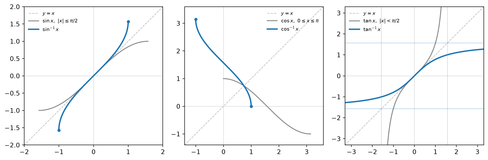
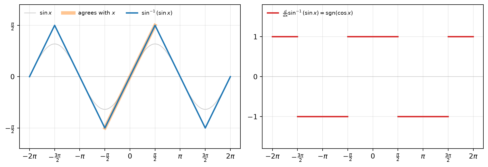
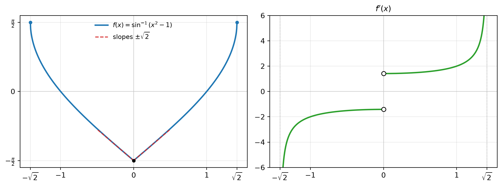
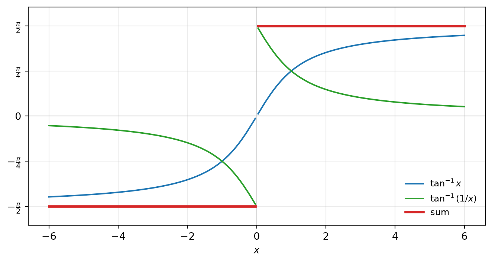

flowchart LR A["Trig function on ℝ<br/>(not one-to-one)"] --> B["Restrict to a<br/>monotone interval"] B --> C["Inverse function<br/>range = that interval"] C --> D["f(y) = x<br/>differentiate implicitly"] T["Inverse function theorem"] --> D D --> E["dy/dx = 1 / f′(y)"] E --> F["Pythagorean identity<br/>sign fixed by the range"] F --> G["Derivative formulas"]
Differentiation Rule: Derivatives of Inverse Trigonometric Functions
Restrict, invert, differentiate implicitly, and let the range fix the sign
An inverse trigonometric function is built in two steps: restrict a trigonometric function to an interval on which it is strictly monotone, then invert it. Every derivative in this note comes from one computation. Differentiate \(f(y)=x\) implicitly to get \(dy/dx = 1/f'(y)\), then rewrite \(f'(y)\) in terms of \(x\) with a Pythagorean identity. The identity determines \(f'(y)\) only up to sign, and the range of the inverse function fixes the sign. That single observation explains every formula, every excluded point, and every convention dispute below.
1 Defining the Inverse Functions
1.1 Why a restriction is needed
A function has an inverse exactly when it is one-to-one. Sine, cosine and tangent are periodic, so each value is attained infinitely often and no inverse exists on the full domain. The remedy is to restrict each function to an interval on which it is strictly monotone and still attains every value of its range. The standard (principal) choices are:
| Function | Restricted to | Inverse | Domain of inverse | Range of inverse |
|---|---|---|---|---|
| \(\sin x\) | \([-\pi/2,\ \pi/2]\) | \(\sin^{-1}x = \arcsin x\) | \([-1,1]\) | \([-\pi/2,\ \pi/2]\) |
| \(\cos x\) | \([0,\ \pi]\) | \(\cos^{-1}x = \arccos x\) | \([-1,1]\) | \([0,\ \pi]\) |
| \(\tan x\) | \((-\pi/2,\ \pi/2)\) | \(\tan^{-1}x = \arctan x\) | \(\mathbb{R}\) | \((-\pi/2,\ \pi/2)\) |
Each inverse is defined by an equivalence that states the range condition explicitly:
\[ \begin{aligned} \sin^{-1}x = y &\iff \sin y = x \ \text{ and } \ -\tfrac{\pi}{2}\le y\le\tfrac{\pi}{2},\\ \cos^{-1}x = y &\iff \cos y = x \ \text{ and } \ 0\le y\le\pi,\\ \tan^{-1}x = y &\iff \tan y = x \ \text{ and } \ -\tfrac{\pi}{2}< y<\tfrac{\pi}{2}. \end{aligned} \]
The range condition is not decoration. It is exactly the information that the equation \(\sin y = x\) alone does not contain, and every sign decision below comes from it.
The notation \(\sin^{-1}x\) means the inverse function, not \((\sin x)^{-1} = \csc x\). Graphically, the inverse is the reflection of the restricted graph across the line \(y=x\) (Figure 1).

1.2 Cancellation equations
The two compositions behave differently:
\[ \sin(\sin^{-1}x) = x \quad (-1\le x\le 1), \qquad \sin^{-1}(\sin x) = x \quad \left(-\tfrac{\pi}{2}\le x\le\tfrac{\pi}{2}\right). \]
The first holds on the whole domain of \(\sin^{-1}\). The second holds only on the restricted interval: for any real \(x\), \(\sin^{-1}(\sin x)\) is the unique angle in \([-\pi/2,\pi/2]\) with the same sine as \(x\). For example,
\[ \sin^{-1}\!\left(\sin\tfrac{3\pi}{4}\right) = \tfrac{\pi}{4}, \qquad \sin^{-1}(\sin\pi) = 0 . \]
Over all of \(\mathbb{R}\), the map \(x\mapsto \sin^{-1}(\sin x)\) is a triangle wave of period \(2\pi\) that agrees with \(x\) only on \([-\pi/2,\pi/2]\) (Figure 2). The same pattern holds for cosine on \([0,\pi]\) and tangent on \((-\pi/2,\pi/2)\).

1.3 Continuity
A strictly monotone function on an interval whose image is an interval has no jumps, because a jump would leave a gap in the image. Each inverse above is strictly monotone and its image is the restriction interval, so \(\sin^{-1}\), \(\cos^{-1}\) and \(\tan^{-1}\) are continuous on their domains. Continuity is the hinge of the differentiability proof below.
2 Derivative of an Inverse Function
2.1 Implicit differentiation
Let \(y = f^{-1}(x)\), so \(f(y) = x\). Assuming \(f^{-1}\) is differentiable, differentiate both sides with respect to \(x\):
\[ f'(y)\,\frac{dy}{dx} = 1 \quad\Longrightarrow\quad \frac{dy}{dx} = \frac{1}{f'(y)}, \qquad\text{that is,}\qquad (f^{-1})'(x) = \frac{1}{f'\big(f^{-1}(x)\big)} . \]
2.2 Geometric reading
Reflection across \(y=x\) sends a point \((a,b)\) to \((b,a)\), so it sends a tangent direction \((1,m)\) to \((m,1)\). The slope becomes \(1/m\): rise and run swap roles. In particular, a horizontal tangent of \(f\) (\(m=0\)) becomes a vertical tangent of \(f^{-1}\).
2.3 Inverse function theorem (one variable)
The computation above assumed that \(f^{-1}\) is differentiable. The following theorem removes that assumption.
NoteTheorem
Let \(f\) be continuous and strictly monotone on an interval \(I\), and let \(y_0\in I\). If \(f\) is differentiable at \(y_0\) and \(f'(y_0)\neq 0\), then \(f^{-1}\) is differentiable at \(x_0 = f(y_0)\) and
\[ (f^{-1})'(x_0) = \frac{1}{f'(y_0)} . \]
Proof. For \(x\neq x_0\) in \(f(I)\), put \(y = f^{-1}(x)\). Injectivity gives \(y\neq y_0\), so the difference quotient can be inverted:
\[ \frac{f^{-1}(x) - f^{-1}(x_0)}{x - x_0} = \frac{y - y_0}{f(y) - f(y_0)} = \left[\frac{f(y) - f(y_0)}{y - y_0}\right]^{-1}. \]
As \(x\to x_0\), continuity of \(f^{-1}\) gives \(y\to y_0\) with \(y\neq y_0\), so the bracket tends to \(f'(y_0)\neq0\) and the quotient tends to \(1/f'(y_0)\). If \(y_0\) is an endpoint of \(I\), the same argument gives a one-sided derivative. \(\blacksquare\)
The step “\(x\to x_0\) implies \(y\to y_0\)” is exactly where continuity of the inverse enters. Implicit differentiation uses it silently.
2.4 When \(f'(y_0) = 0\): vertical tangents
If \(f'(y_0) = 0\), then \(f^{-1}\) is not differentiable at \(x_0\). Were it differentiable, the chain rule applied to \(f(f^{-1}(x)) = x\) would give
\[ f'(y_0)\,(f^{-1})'(x_0) = 1 \quad\Longrightarrow\quad 0 = 1 . \]
The identity in the proof says more. The difference quotient of \(f^{-1}\) is the reciprocal of a quantity tending to \(0\). For increasing \(f\) that quantity is positive, so the quotient tends to \(+\infty\) and the graph of \(f^{-1}\) has a vertical tangent at \(x_0\).
3 Inverse Sine
Let \(y = \sin^{-1}x\), so \(\sin y = x\) with \(-\pi/2\le y\le\pi/2\). Implicit differentiation gives
\[ \cos y\,\frac{dy}{dx} = 1 \quad\Longrightarrow\quad \frac{dy}{dx} = \frac{1}{\cos y}. \]
The Pythagorean identity gives only \(\cos y = \pm\sqrt{1-\sin^2 y} = \pm\sqrt{1-x^2}\). On the range \([-\pi/2,\pi/2]\), \(\cos y\ge 0\), so the sign is \(+\):
\[ \boxed{\ \frac{d}{dx}\sin^{-1}x = \frac{1}{\sqrt{1-x^2}}, \qquad -1<x<1\ } \]
Endpoints. At \(x=\pm1\) we have \(y=\pm\pi/2\) and \(\cos y = 0\). By the previous section, \(\sin^{-1}\) is not differentiable there: the graph reaches its endpoints with vertical tangents, and \(1/\sqrt{1-x^2}\to+\infty\) as \(|x|\to1^-\).
Shape. The derivative is even, positive, and minimal (\(=1\)) at \(x=0\). So \(\sin^{-1}\) is increasing and odd, flattest at the origin and steepest near the endpoints.
The formula belongs to the branch. Sine is also strictly monotone on \([\pi/2, 3\pi/2]\). Had we inverted that piece instead, the range would be \([\pi/2,3\pi/2]\), where \(\cos y\le0\), and the derivative would be \(-1/\sqrt{1-x^2}\). The derivative is a property of the chosen branch, not of sine alone.
4 Inverse Cosine
4.1 Direct derivation
Let \(y = \cos^{-1}x\), so \(\cos y = x\) with \(0\le y\le\pi\). Then
\[ -\sin y\,\frac{dy}{dx} = 1 \quad\Longrightarrow\quad \frac{dy}{dx} = -\frac{1}{\sin y}. \]
On \([0,\pi]\), \(\sin y\ge0\), so \(\sin y = +\sqrt{1-x^2}\) and
\[ \boxed{\ \frac{d}{dx}\cos^{-1}x = -\frac{1}{\sqrt{1-x^2}}, \qquad -1<x<1\ } \]
4.2 Via a complementary identity
For \(-1\le x\le 1\),
\[ \sin^{-1}x + \cos^{-1}x = \frac{\pi}{2}. \]
Proof. Let \(\theta = \sin^{-1}x\in[-\pi/2,\pi/2]\). Then \(\pi/2-\theta\in[0,\pi]\) and \(\cos(\pi/2-\theta) = \sin\theta = x\). By the defining equivalence of \(\cos^{-1}\), \(\pi/2-\theta = \cos^{-1}x\). \(\blacksquare\)
Differentiating the identity shows at once that the two derivatives are negatives of each other. Note that the proof checks the range condition, not only the equation \(\cos(\cdot) = x\).
5 Inverse Tangent
5.1 Derivative
Let \(y=\tan^{-1}x\), so \(\tan y = x\) with \(-\pi/2<y<\pi/2\). Then
\[ \sec^2 y\,\frac{dy}{dx} = 1 \quad\Longrightarrow\quad \frac{dy}{dx} = \frac{1}{\sec^2 y} = \frac{1}{1+\tan^2 y} = \frac{1}{1+x^2}. \]
\[ \boxed{\ \frac{d}{dx}\tan^{-1}x = \frac{1}{1+x^2}, \qquad x\in\mathbb{R}\ } \]
No sign decision is needed because \(\sec y\) enters squared, and no point is excluded because \(\tan' = \sec^2\ge1\) never vanishes on \((-\pi/2,\pi/2)\). The derivative lies in \((0,1]\), so \(\tan^{-1}\) is increasing and, by the mean value theorem, \(1\)-Lipschitz: \(|\tan^{-1}a - \tan^{-1}b|\le|a-b|\).
5.2 Limits at infinity
\[ \lim_{x\to\infty}\tan^{-1}x = \frac{\pi}{2}, \qquad \lim_{x\to-\infty}\tan^{-1}x = -\frac{\pi}{2}. \]
The vertical asymptotes \(x=\pm\pi/2\) of the restricted tangent reflect into the horizontal asymptotes \(y=\pm\pi/2\). A direct proof: given \(\varepsilon\in(0,\pi)\), let \(M = \tan(\pi/2-\varepsilon)\). For \(x>M\), monotonicity gives
\[ \frac{\pi}{2}-\varepsilon = \tan^{-1}M < \tan^{-1}x < \frac{\pi}{2}. \]
The case \(x\to-\infty\) follows because \(\tan^{-1}\) is odd.
Example. With \(t = 1/(x-2)\), we have \(t\to\infty\) as \(x\to2^+\) and \(t\to-\infty\) as \(x\to2^-\), so
\[ \lim_{x\to2^+}\tan^{-1}\frac{1}{x-2} = \frac{\pi}{2}, \qquad \lim_{x\to2^-}\tan^{-1}\frac{1}{x-2} = -\frac{\pi}{2}. \]
The function has a jump of size \(\pi\) at \(x = 2\), so no value at \(x=2\) can make it continuous.
6 Simplifying Compositions
6.1 Method
To evaluate \(g(h^{-1}(x))\) for trigonometric \(g\) and \(h\): set \(\theta = h^{-1}(x)\), read off \(h(\theta) = x\), use a Pythagorean identity to obtain \(g(\theta)\) up to sign, and fix the sign from the range of \(h^{-1}\). A right-triangle sketch reproduces the magnitude, but by itself it only covers \(\theta>0\). The range argument covers every \(x\).
Example. For \(\theta = \tan^{-1}x\), \(\sec^2\theta = 1+\tan^2\theta = 1+x^2\). Since \(\sec\theta>0\) on \((-\pi/2,\pi/2)\),
\[ \cos(\tan^{-1}x) = \frac{1}{\sec\theta} = \frac{1}{\sqrt{1+x^2}}. \]
Example. For \(\theta = \sin^{-1}\frac13\), the range gives \(\cos\theta = +\sqrt{1-\frac19} = \frac{2\sqrt2}{3}\), so
\[ \tan\left(\sin^{-1}\tfrac13\right) = \frac{1/3}{2\sqrt2/3} = \frac{1}{2\sqrt2}. \]
6.2 Table of compositions
| \(\theta=\sin^{-1}x\) | \(\theta=\cos^{-1}x\) | \(\theta=\tan^{-1}x\) | |
|---|---|---|---|
| \(\sin\theta\) | \(x\) | \(\sqrt{1-x^2}\) | \(\frac{x}{\sqrt{1+x^2}}\) |
| \(\cos\theta\) | \(\sqrt{1-x^2}\) | \(x\) | \(\frac{1}{\sqrt{1+x^2}}\) |
| \(\tan\theta\) | \(\frac{x}{\sqrt{1-x^2}}\) \((\lvert x\rvert<1)\) | \(\frac{\sqrt{1-x^2}}{x}\) \((x\neq0)\) | \(x\) |
Every bare square root sits exactly where the range forces \(\sin\theta\ge0\) or \(\cos\theta\ge0\). Wherever the sign can vary, it is carried by the factor \(x\).
7 The Remaining Three Inverses
7.1 Inverse cotangent
Restrict \(\cot\) to \((0,\pi)\). Then \(\cot^{-1}:\mathbb{R}\to(0,\pi)\), and from \(\cot y = x\),
\[ -\csc^2y\,\frac{dy}{dx} = 1 \quad\Longrightarrow\quad \frac{d}{dx}\cot^{-1}x = -\frac{1}{1+\cot^2y} = -\frac{1}{1+x^2}. \]
Equivalently \(\cot^{-1}x = \frac{\pi}{2}-\tan^{-1}x\), proved exactly like the arcsine-arccosine identity: with \(\theta=\tan^{-1}x\), we have \(\pi/2-\theta\in(0,\pi)\) and \(\cot(\pi/2-\theta) = \tan\theta = x\).
7.2 Inverse secant: two conventions
\(\sec^{-1}\) is defined for \(|x|\ge1\), and here the restriction interval is genuinely a choice. Two conventions are in common use:
\[ \text{(A)}\ \ y\in\left[0,\tfrac{\pi}{2}\right)\cup\left[\pi,\tfrac{3\pi}{2}\right), \qquad \text{(B)}\ \ y\in\left[0,\tfrac{\pi}{2}\right)\cup\left(\tfrac{\pi}{2},\pi\right]. \]
In both, the branch for \(x\ge1\) lies in \([0,\pi/2)\). They differ in where the branch for \(x\le-1\) lives. From \(\sec y = x\),
\[ \sec y\tan y\,\frac{dy}{dx} = 1 \quad\Longrightarrow\quad \frac{dy}{dx} = \frac{1}{x\tan y}, \qquad \tan^2y = \sec^2y - 1 = x^2-1 . \]
The sign of \(\tan y\) is the whole story.
Convention (A). The \(x\le-1\) branch lies in the third quadrant, where \(\tan y\ge0\). Hence \(\tan y = \sqrt{x^2-1}\) on both branches and
\[ \frac{d}{dx}\sec^{-1}x = \frac{1}{x\sqrt{x^2-1}}, \qquad |x|>1 . \]
Convention (B). The \(x\le-1\) branch lies in the second quadrant, where \(\tan y\le0\). Hence \(\tan y = \operatorname{sgn}(x)\sqrt{x^2-1}\) and
\[ \frac{d}{dx}\sec^{-1}x = \frac{1}{|x|\sqrt{x^2-1}}, \qquad |x|>1 . \]
Trade-off. Convention (A) gives a derivative with no absolute value, which is convenient when the formula is read backward as an antiderivative. Convention (B) gives the identity \(\sec^{-1}x = \cos^{-1}(1/x)\) and a function that is increasing on each branch. Under (A), the \(x\le-1\) branch is \(\sec^{-1}x = 2\pi - \cos^{-1}(1/x)\), which is decreasing; this is why \(1/(x\sqrt{x^2-1})\) is negative there.
7.3 Inverse cosecant
The structure is identical. From \(\csc y = x\) we get \(-\csc y\cot y\,y' = 1\), so \(y' = -1/(x\cot y)\) with \(\cot^2y = x^2-1\).
- Convention (A), \(y\in(0,\pi/2]\cup(\pi,3\pi/2]\): \(\cot y\ge0\) on both branches, so \(\frac{d}{dx}\csc^{-1}x = -\frac{1}{x\sqrt{x^2-1}}\).
- Convention (B), \(y\in[-\pi/2,0)\cup(0,\pi/2]\): \(\cot y\) has the sign of \(x\), so \(\frac{d}{dx}\csc^{-1}x = -\frac{1}{|x|\sqrt{x^2-1}}\).
8 Chain Rule Examples
8.1 A composite with a corner
Let \(f(x) = \sin^{-1}(x^2-1)\).
Domain. \(-1\le x^2-1\le1 \iff 0\le x^2\le2 \iff |x|\le\sqrt2\), so the domain is \([-\sqrt2,\sqrt2]\).
Derivative. The outer derivative requires \(|x^2-1|<1\), that is \(0<x^2<2\):
\[ f'(x) = \frac{1}{\sqrt{1-(x^2-1)^2}}\cdot2x = \frac{2x}{\sqrt{2x^2-x^4}} = \frac{2x}{|x|\sqrt{2-x^2}} = \frac{2\operatorname{sgn}(x)}{\sqrt{2-x^2}}, \]
valid on \((-\sqrt2,0)\cup(0,\sqrt2)\). The simplification uses \(\sqrt{x^2}=|x|\), not \(x\).
What happens at \(x=0\). There the inner function reaches \(-1\), an endpoint of the domain of \(\sin^{-1}\), where the outer derivative is infinite, while the inner derivative \(2x\) is \(0\). The product is indeterminate, and the one-sided limits of \(f'\) are \(\pm\sqrt2\). A local expansion makes this exact. Let \(t = \sin^{-1}(-1+u)+\pi/2\) for small \(u\ge0\). Then \(-1+u = \sin(t-\pi/2) = -\cos t\), so \(u = 1-\cos t = t^2/2 + O(t^4)\) and \(t = \sqrt{2u}+O(u^{3/2})\). Substituting \(u = x^2\),
\[ f(x) = -\frac{\pi}{2} + \sqrt2\,|x| + O(|x|^3), \]
a corner with one-sided slopes \(\pm\sqrt2\) (Figure 3). A square-root endpoint of the outer function, composed with a quadratic minimum of the inner function, produces an absolute value.

8.2 A product
Let \(f(x) = x\tan^{-1}\sqrt x\) for \(x\ge0\). For \(x>0\), the product and chain rules give
\[ f'(x) = \tan^{-1}\sqrt x + x\cdot\frac{1}{1+x}\cdot\frac{1}{2\sqrt x} = \tan^{-1}\sqrt x + \frac{\sqrt x}{2(1+x)} . \]
At \(x=0\) the chain rule does not apply, since \(\sqrt x\) is not differentiable there, but the definition does: \(\frac{f(x)-f(0)}{x} = \tan^{-1}\sqrt x\to0\) as \(x\to0^+\). So \(f'(0)=0\) as a right-hand derivative, matching the limit of the formula.
8.3 The triangle wave
For \(\cos x\neq0\),
\[ \frac{d}{dx}\sin^{-1}(\sin x) = \frac{\cos x}{\sqrt{1-\sin^2x}} = \frac{\cos x}{|\cos x|} = \operatorname{sgn}(\cos x). \]
The slope is \(\pm1\) and switches at odd multiples of \(\pi/2\), which is exactly the triangle wave of Figure 2. Writing \(\sqrt{1-\sin^2x} = \cos x\) would wrongly give slope \(1\) everywhere.
9 Rigor Notes
9.1 Zero derivative does not imply constant
Let \(g(x) = \tan^{-1}x + \tan^{-1}(1/x)\) for \(x\neq0\). Then
\[ g'(x) = \frac{1}{1+x^2} + \frac{1}{1+x^{-2}}\cdot\left(-\frac{1}{x^2}\right) = \frac{1}{1+x^2} - \frac{1}{x^2+1} = 0 . \]
Yet \(g(1) = \pi/2\) and \(g(-1) = -\pi/2\). The mean value theorem forces \(g\) to be constant only on each interval of its domain, and \(\mathbb{R}\setminus\{0\}\) consists of two intervals. Hence \(g(x) = \frac{\pi}{2}\operatorname{sgn}(x)\) (Figure 4).

9.2 Where each hypothesis is used
- Strict monotonicity on an interval: existence of the inverse, and its continuity.
- Continuity of the inverse: the implication \(x\to x_0 \Rightarrow y\to y_0\) in the proof of the theorem.
- \(f'(y_0)\neq0\): differentiability of the inverse. Its failure produces the vertical tangents of \(\sin^{-1}\) and \(\cos^{-1}\) at \(x=\pm1\).
- The range: the sign of every square root.
9.3 Reading the formulas backward
The derivatives are algebraic functions while the inverse trigonometric functions are not. Read backward, the formulas give antiderivatives of algebraic functions that leave the algebraic world:
\[ \int\frac{dx}{\sqrt{1-x^2}} = \sin^{-1}x + C, \qquad \int\frac{dx}{1+x^2} = \tan^{-1}x + C . \]
10 Summary
| Function | Domain | Range | Derivative | Valid for |
|---|---|---|---|---|
| \(\sin^{-1}x\) | \([-1,1]\) | \([-\pi/2,\ \pi/2]\) | \(\frac{1}{\sqrt{1-x^2}}\) | \(\lvert x\rvert<1\) |
| \(\cos^{-1}x\) | \([-1,1]\) | \([0,\ \pi]\) | \(-\frac{1}{\sqrt{1-x^2}}\) | \(\lvert x\rvert<1\) |
| \(\tan^{-1}x\) | \(\mathbb{R}\) | \((-\pi/2,\ \pi/2)\) | \(\frac{1}{1+x^2}\) | \(x\in\mathbb{R}\) |
| \(\cot^{-1}x\) | \(\mathbb{R}\) | \((0,\ \pi)\) | \(-\frac{1}{1+x^2}\) | \(x\in\mathbb{R}\) |
| \(\sec^{-1}x\) (A) | \(\lvert x\rvert\ge1\) | \([0,\pi/2)\cup[\pi,3\pi/2)\) | \(\frac{1}{x\sqrt{x^2-1}}\) | \(\lvert x\rvert>1\) |
| \(\sec^{-1}x\) (B) | \(\lvert x\rvert\ge1\) | \([0,\pi/2)\cup(\pi/2,\pi]\) | \(\frac{1}{\lvert x\rvert\sqrt{x^2-1}}\) | \(\lvert x\rvert>1\) |
| \(\csc^{-1}x\) (A) | \(\lvert x\rvert\ge1\) | \((0,\pi/2]\cup(\pi,3\pi/2]\) | \(-\frac{1}{x\sqrt{x^2-1}}\) | \(\lvert x\rvert>1\) |
| \(\csc^{-1}x\) (B) | \(\lvert x\rvert\ge1\) | \([-\pi/2,0)\cup(0,\pi/2]\) | \(-\frac{1}{\lvert x\rvert\sqrt{x^2-1}}\) | \(\lvert x\rvert>1\) |
Common pitfalls
- \(\sin^{-1}x\) is not \(1/\sin x\).
- \(\sin^{-1}(\sin x) = x\) only for \(x\in[-\pi/2,\pi/2]\).
- \(\sqrt{1-\sin^2y}=|\cos y|\). Dropping the absolute value is legitimate only when the range guarantees \(\cos y\ge0\).
- The derivative formulas fail at \(x=\pm1\): vertical tangents for \(\sin^{-1}\) and \(\cos^{-1}\), and the same for \(\sec^{-1}\) and \(\csc^{-1}\).
- Before using a \(\sec^{-1}\) or \(\csc^{-1}\) formula, check which range convention is in force.